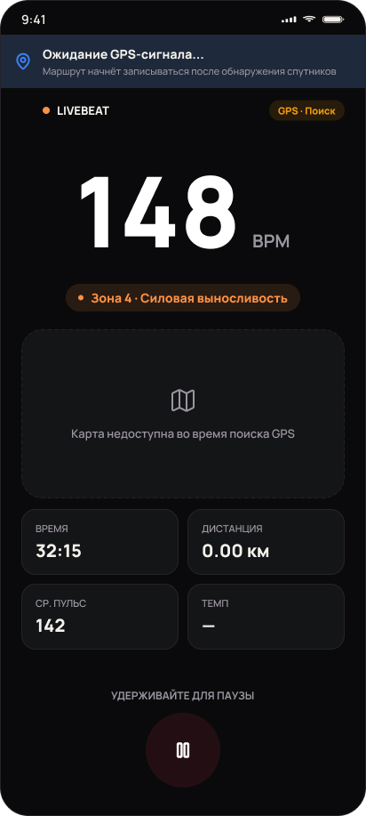
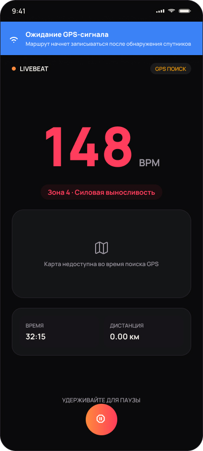
Ожидание GPS
Пока спутники не найдены, карта честно говорит, что трек недоступен, а пульс продолжает записываться.
Тренировки по пульсу в реальном времени. Android-приложение подключается к нагрудному пульсометру по Bluetooth, подсвечивает зону нагрузки цветом и пишет GPS-трек. Без аккаунтов и облака.
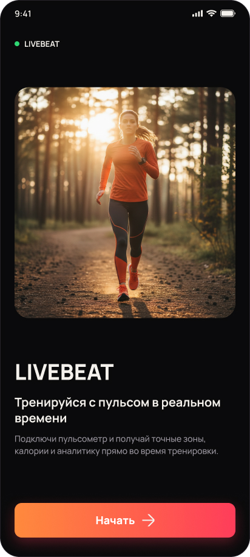
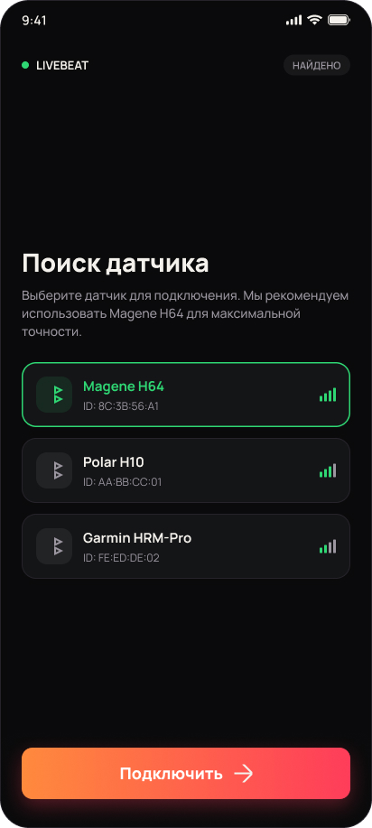

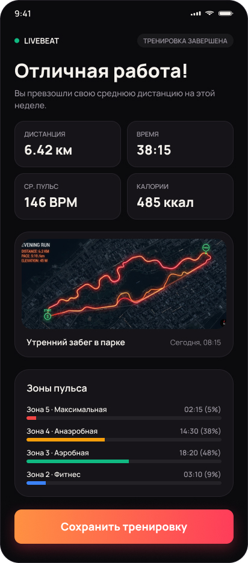
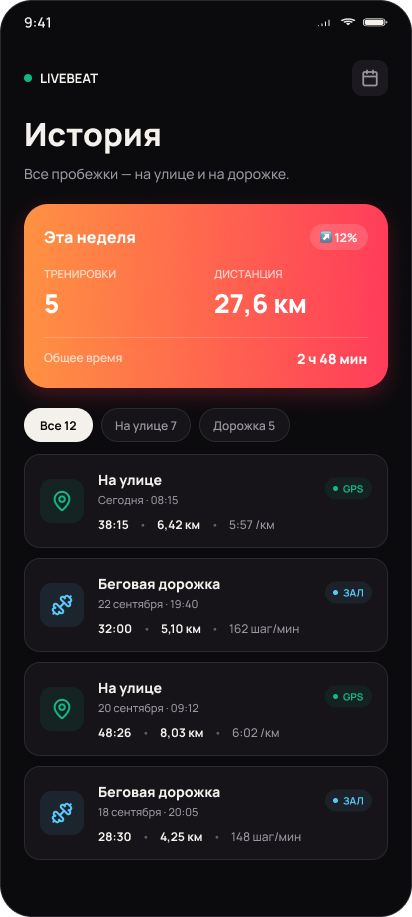
LIVEBEAT — Android-приложение для тренировок по пульсу. Подключается к нагрудному пульсометру по Bluetooth, показывает зону нагрузки, пишет GPS-трек и после финиша раскладывает тренировку по зонам. Часы меряют пульс запястьем и на бегу ошибаются, а ремень без приложения просто цифра. Здоровье остаётся на телефоне: нет аккаунтов, аналитики и серверов, в сеть приложение ходит только за тайлами карты.
Спортсмен во время интенсивного бега не может концентрироваться на мелких элементах экрана. Главный вызов — показать критичные параметры в агрессивной физической среде.
Интерфейс должен быть максимально контрастным: огромные цифры пульса, яркие цвета аэробной зоны, которые считываются периферийным зрением, и запуск тренировки в один тап.
Градиентное кольцо пульса на прелоадере задаёт визуальный язык. Тот же градиент дальше отмечает главное действие на каждом экране.
Никаких аккаунтов и паролей: пользователь сразу переходит к настройке, а данные остаются на устройстве.
Вес, возраст и пол нужны для расчёта калорий и зон, максимальный пульс можно задать свой. Разрешения показаны статусами: видно, что выдано, а что ещё нет, готовые блоки загораются зелёным.
Пульсирующее кольцо показывает, что приложение слушает эфир и ищет пульсометры рядом по Bluetooth Low Energy.
Найденные устройства идут списком с уровнем сигнала. Выбранный датчик подсвечивается, подключение одной кнопкой. Если Bluetooth выключен, приложение так и говорит и предлагает включить.
Улица, дорожка, велосипед, зал, кроссфит, йога и другое. Там, где нужен маршрут, включается GPS-трек, на дорожке и в зале остаётся только пульс. Кроссфит получает интервальный таймер, зал таймер отдыха.
148 BPM читаются с расстояния вытянутой руки, зона подсвечена цветом, трек рисуется в реальном времени. Голос в наушниках говорит темп и пульс каждый километр.
Дистанция, время, средний пульс, калории и маршрут. Время в каждой зоне, сплиты по километрам и пульс восстановления за минуту после остановки показывают, как на самом деле прошла нагрузка.
Недельная сводка и цели на неделю, фильтры по виду тренировки и лента всех сессий. Всю историю можно выгрузить одним файлом, а маршрут отдать в GPX.
Каждый экран живёт в нескольких состояниях. Настройка постепенно зеленеет по мере заполнения, а экран тренировки я проработал в двух визуальных подходах.
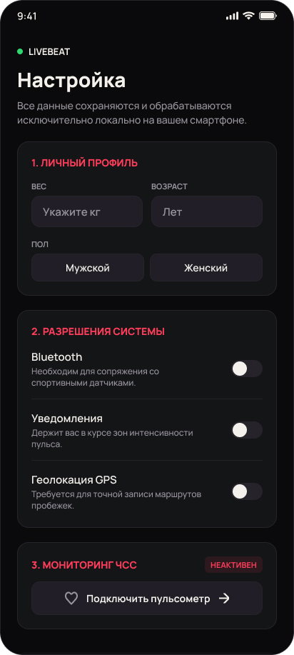
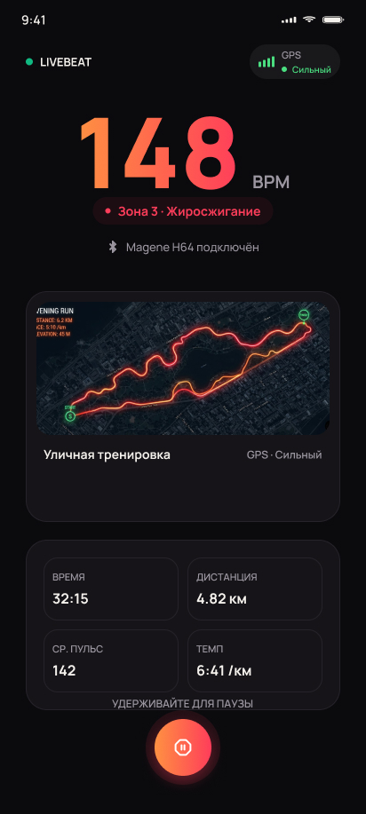
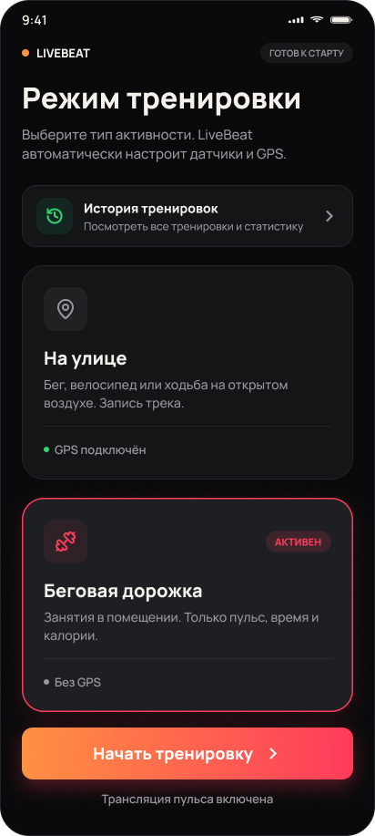
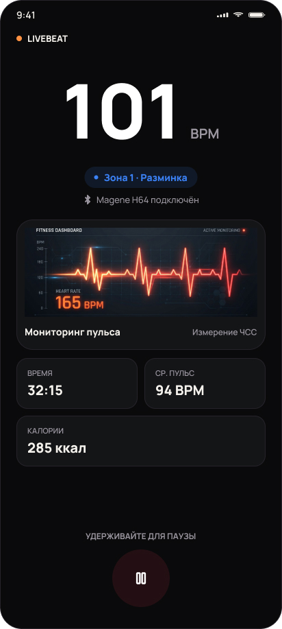
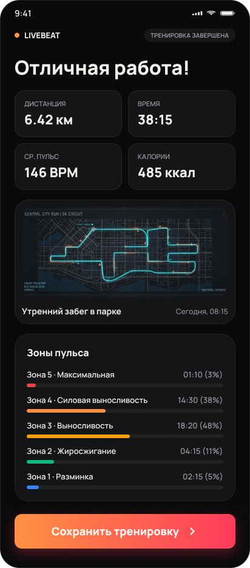
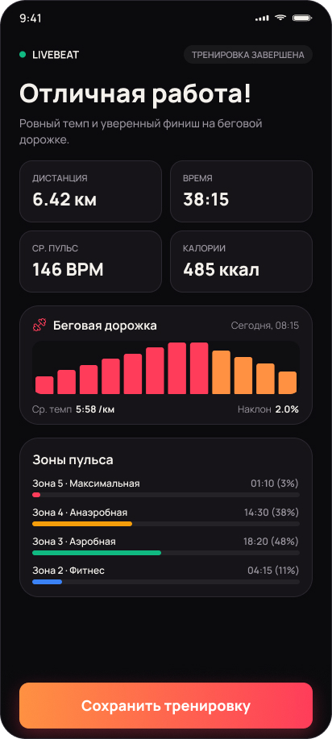
Сигнал теряется, ремень сползает, датчик садится. Тренировка при этом не должна обрываться, а пользователь — гадать, что случилось. Для тревожных баннеров сделал два уровня подачи — переключайте.


Пока спутники не найдены, карта честно говорит, что трек недоступен, а пульс продолжает записываться.
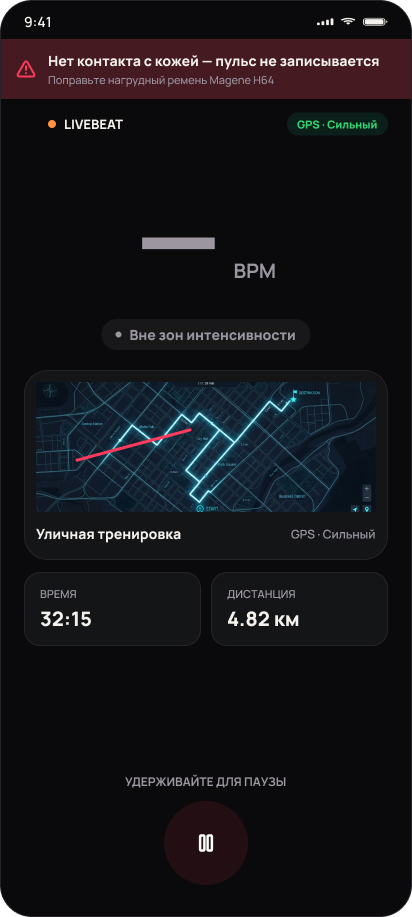
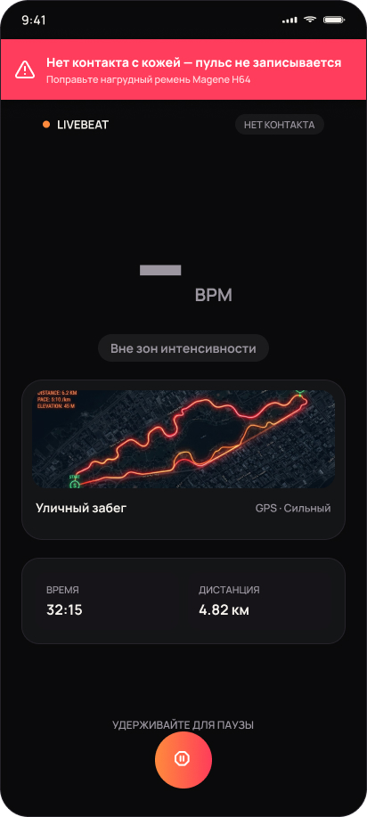
Датчик на месте, но не касается кожи. Баннер просит поправить ремень, а шумные данные не попадают в статистику.
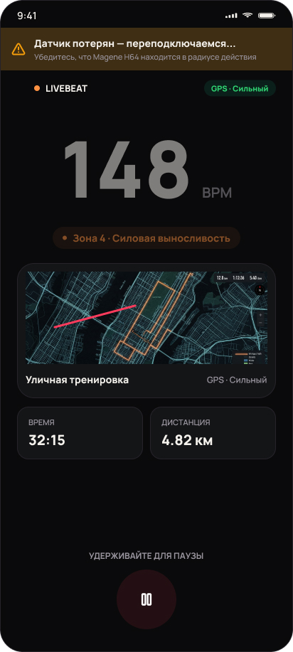
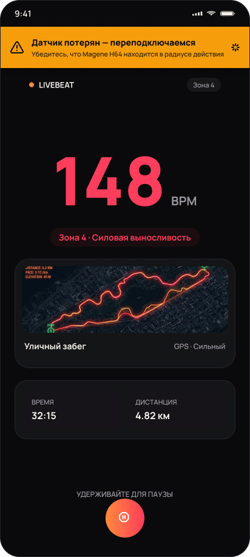
Связь пропала: приложение само переподключается в фоне. Если ремень пропал из эфира, оно сначала слушает эфир и подключается, когда он вернулся.
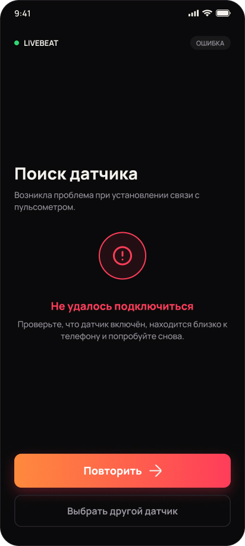
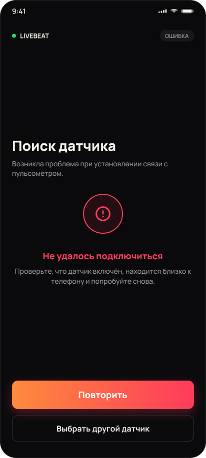
Понятный выход из тупика: повторить попытку или выбрать другой датчик из списка.
Пять зон от максимального пульса по возрасту и полу или от вашего значения. Целевая зона: вибрация и голос, когда пульс из неё вышел.
Трек пишется в фоне с заблокированным экраном. Можно загрузить маршрут GPX и бежать по нему, а готовый трек выгрузить в GPX для Strava.
Стандартный профиль пульса по Bluetooth Low Energy. Проверено на Magene H64, заряд ремня виден на главной, пульс показан в уведомлении.
Время в зонах, сплиты, пульс восстановления, динамика по неделям, пульс на одном и том же темпе, личные рекорды отдельно для бега и велосипеда.
Подсказки в наушники каждый километр или каждые N минут. Интервальный таймер для кроссфита (Tabata, EMOM, AMRAP), таймер отдыха в зале.
Тренировки и биометрия лежат на телефоне. Историю можно выгрузить и загрузить обратно одним файлом, виджет «Эта неделя» живёт на рабочем столе.
Первое открытие истории не должно выглядеть как ошибка. Каждое пустое состояние объясняет, что здесь появится, и ведёт к действию, которое это исправит.
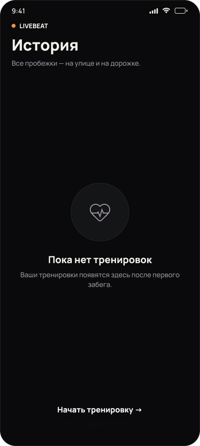
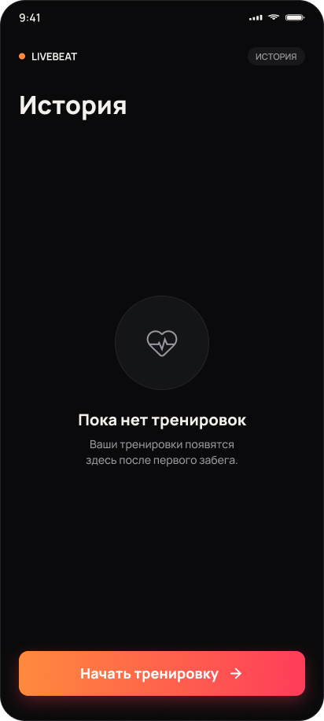
TypeScript, состояние на Zustand, нативные модули подключаются через конфиг-плагины Expo. Сборки идут в GitHub Actions.
Один коннект за раз, повторы с паузами, и ремень, пропавший из эфира, ждёт в режиме прослушивания. Покрыто тестами на поддельном Bluetooth, который ведёт себя как настоящий.
Foreground-сервис с уведомлением держит запись с заблокированным экраном. Тренировка сохраняется черновиком каждые 10 секунд и переживает выгрузку приложения.
История тренировок и записи пульса в локальной базе, без сервера. Контакт с кожей отслеживается, застывший пульс снятого ремня не попадает в статистику.
Макеты Figma, по которым сделан интерфейс. В приложении часть экранов ушла дальше: семь видов тренировок, статусы разрешений, карта OpenStreetMap. Нажмите на любой, чтобы рассмотреть поближе.
LIVEBEAT работает на Android, я пользуюсь им на своих пробежках и поездках. Дальше выход в RuStore: уже готовы релизная подпись в CI, политика конфиденциальности и тексты карточки.
Запись не рвётся на бегу: соединение с датчиком, контакт с кожей, сохранение черновика и фоновый сервис покрыты 336 автотестами. Чего в приложении нет, оставлено осознанно: вариабельность пульса убрана, потому что тестовый ремень доносил до телефона лишь треть ударов и цифра выходила недостоверной.
Напишите, что нужно сделать, и я отвечу, как вижу решение и за какое время.